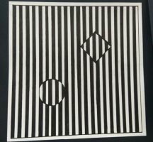

When I had no roof I made audacity my roof. -- “Samurai Song” by Robert Pinsky
Address:
Jinan, China
E-mail:
kaidizhang.kitty@gmail.com
Github:
github.com/kittyzZ
大家好！

A text mining script in python for Jackson J. Spielvogel's Western Civilization: A Brief History